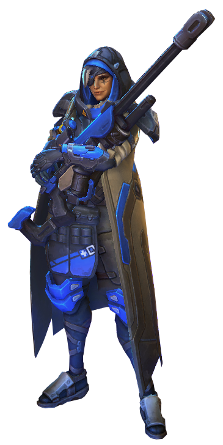

Ana Amari
Support + Sniper

Basic Abilities
- Trait: Shrike Basic Attacks apply a Dose to non-Structure enemies, dealing an additional 44 damage over 5 seconds, and stacking up to 5 times.
- Healing Dart Fire a dart which heals the first allied Hero hit for 237 Health.
- Biotic Grenade Toss a Grenade at the target area. Allied Heroes hit are healed for 166 Health and receive 25% increased healing for 4 seconds. Enemies hit take 60 damage and receive 100% less healing for 2 seconds.
- Sleep Dart Fire a dart that puts the first enemy Hero hit to Sleep, Stunning them for 3 seconds. Sleep's effects end instantly if the target takes damage after the first 0.5 seconds. Cannot be used on Vehicles.
Heroic Abilities
- Nano Boost Instantly boost an allied Hero, restoring 200 Mana. For the next 8 seconds, they gain 30% Spell Power and their Basic Ability cooldowns recharge 150% faster. Cannot be used on Ana.
- Eye of Horus Assume a sniping position, gaining the ability to fire up to 8 specialized rounds with unlimited range. Rounds hit the first allied or enemy Hero or enemy Structure in their path. Allies are healed for 285 and enemies are damaged for 166. Deals 50% less damage to Structures. Ana is unable to move while Eye of Horus is active.